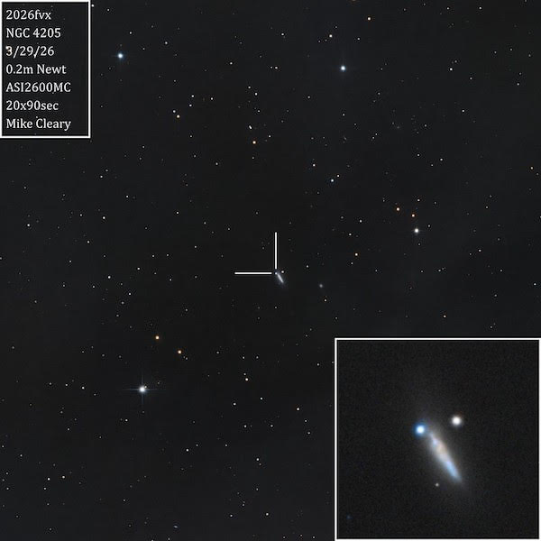
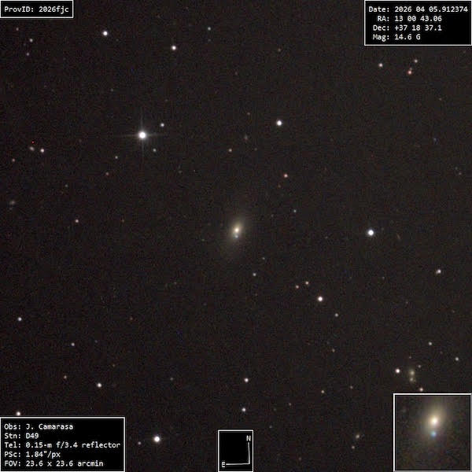

OR: Supernovae at Lake Sonoma on Apr. 6, 2026
On Monday night, we had five observers at Lake Sonoma including Jim Molinari, Muriel Holzer, Bob Douglas, Mazen Ataya and a nice collection of large glass. Jim brought along his 22" UC Obsession, Muriel observed with an 18" classic Obsession, Bob had his 18" Starmaster, Mazen a 4" refractor, and I lugged along my 24" Starstructure. The sky was mostly clear, though we did have some passing clouds to the south. The transparency and seeing were average at best and light dew formed on my table and chair (not affecting optics). But to be safe, I kept my 3 main eyepieces tucked away in my astro-vest, so they stayed completely dry. It was a relatively short night as we haven't yet reached 3rd quarter, but I still observed from just after 9:00 until 12:20 (moonrise was at 12:45). I was packed up by 1:00 and home before 2:30. The rising yellow-orange moon over the hills to the east was quite striking.
Most of the night I tracked down UGC galaxies (an ongoing project) in Lynx, Gemini, and Camelopardalus, but I also wanted to see two supernovae that were discovered last month. SN 2026fvx, discovered on March 17th in NGC 4205 (Draco), is a type Ia — a binary system in which a white dwarf component snatches matter from its companion until it reaches critical mass, the Chandrasekhar limit, and explodes. Since type Ia SNe all explode at the same mass (1.44 solar masses), their absolute magnitude is very similar and they can be used as standard distance candles. No remnant (neutron star or black hole) remains after the destruction of the white dwarf.
SN 2026fjc in NGC 4914 (Canes Venatici) was discovered on March 12th and is also a type Ia, but the galaxy is at least 3 times as distant as NGC 4205, so this supernova is significantly fainter. Both SNe were discovered very early. In fact, SN 2026fvx was only mag 19.6 when it was discovered by the Large Array Survey Telescope (LAST) in the Israeli Negev Desert.
NGC 4205
12 14 55.3 +63 46 55; Dra
V = 12.9; Size 1.7'×0.6'; Surf Br = 12.7; PA = 28°
The galaxy is a fairly faint, very elongated streak oriented 4:1 SSW-NNE with a well-defined edge and a brighter core. A mag 13.2 star is west of the NNE end [35" from center]. Type Ia SN 2026fvx, discovered on 3/18/26, was a prominent mag ~12.5 "star" (blue in the insert image) at the NNE end [18" E, 19" N of center]. It appeared noticeably brighter than the mag 13.2 star nearby to its west (right on the image).

NGC 4914
13 00 42.9 +37 18 54; CVn
V = 11.6; Size 3.5'×1.9'; Surf Br = 13.7; PA = 155°
The galaxy appeared fairly bright and moderately large at 327x. It is elongated 2:1 NNW-SSE with a bright core that increases to a very bright nucleus. Type Ia SN 2026fjc was visible south of the core as a faint mag 15th mag "star" (19" S of center).
